항공기관정비기능사 (2001-04-29 기출문제)
1과목: 비행원리
1. A1합금 RIVET 중 황색은?
- 크롬산아연으로 보호도장을 한 것이다.
- 양극처리를 한것이다.
- 금속도료를 도장한 것이다.
- 니켈, 마그네슘선으로 보호도장된 것이다.
(정답률: 67%)

2. C급 화재시 사용되는 소화기 중 가장 알맞은 것은?
- CO2소화기, CBM 소화기
- CBM 소화기, 소화전 소화기
- form 소화기, 분말 소화기
- 소화전 소화기, 분말 소화기
(정답률: 75%)
3. 가스터빈 엔진의 흡입계통에 대한 설명으로 틀린 것은?
- 기관으로 흡입되는 공기의 속도에너지를 압력에너지로 바꾸며 이것을 램압력이라 한다.
- 흡입덕트에서 와류나 압력분포의 차이가 있으면 압축기 실속을 일으키기 쉽다.
- 외부물질에의한 기관손상을 F.O.D라하며, 이것을 방지하기위해 스크린을 설치하기고 한다.
- 흡입덕트 입구벽 내부에는 연소실에서 생성된 뜨거운 공기를 이용한 방빙장치가 있다.
(정답률: 41%)
4. 4행정으로 작동하는 6기통 수평대향형 왕복기관의 점화순서는?(오류 신고가 접수된 문제입니다. 반드시 정답과 해설을 확인하시기 바랍니다.)
- 1 - 5 - 3 - 6 - 2 - 4
- 1 - 5 - 3 - 6 - 4 - 2
- 1 - 6 - 4 - 5 - 3 - 2
- 1 - 2 - 5 - 3 - 6 - 4
(정답률: 43%)
5. 측정물의 평면의 상태검사,원통의 진원검사 등에 이용되는 측정기기는?
- 버니어 캘리퍼스
- 다이얼 게이지
- 마이크로 미터
- 깊이 게이지
(정답률: 85%)
6. 항공기가 이륙하여 착륙을 완료하는 횟수를 뜻하는 용어는?
- Block time
- Air time
- Time in service
- Flight cycle
(정답률: 72%)
7. 헬리콥터의 수직꼬리날개를 장착한 이유로서 가장 적당한 것은?
- 빗놀이 모멘트로 반작용 토크를 상쇄시키기 위하여
- 키놀이 모멘트로 토크를 상쇄시키기 위하여
- 옆놀이 모멘트로 토크를 상쇄시키기 위하여
- 키놀이와 옆놀이 모멘트 토크를 상쇄시키기 위하여
(정답률: 75%)
8. 두축 축류형 압축기(dual axial flow compressor)는 무엇 때문에 더 많은 출력을 낼수 있는가?
- 더 많은 터어빈 휘일(more turbine wheel)
- 더 높은 압축비(higher compressor ratio)
- 더 낮은 디퓨우져(diffuser)압력
- 연소실에 들어오는 더 많은 속도(more velocity)
(정답률: 66%)
9. 반동도가 "0" 이며 가스의 팽창은 터빈 스테이터에서만 이루어지고 로우터 깃에서는 전혀 팽창이 이루어지지 않는다. 따라서 로우터 깃의 입구와 출구의 압력 및 상대 속도가 일정한 특징을 갖는 터빈은?
- 반동 터빈
- 충동 터빈
- 반동-충동 터빈
- 레디알 후로우 터빈
(정답률: 60%)
10. 비열비(K)는 정압비열(Cp)와 정적비열(Cv)로 표시할 수 있다. 가장 올바르게 표현한 것은?
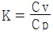
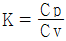
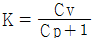
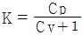
(정답률: 60%)
11. 날개의 평면모양으로 구분한 날개가 아닌 것은?
- 후퇴날개
- 전진날개
- 테어퍼(TAPER)형 날개
- 낮은 날개(LOW WING)
(정답률: 87%)
12. 피스톤의 지름이 15cm인 피스톤에 60kgf/cm2 의 가스압력이 작용하면 피스톤에 미치는 힘은 얼마인가?
- 15.2t
- 10.6t
- 4.0t
- 3.6t
(정답률: 49%)
13. 항공기 외부세척의 종류중 틀리는 것은?
- 습식 세척
- 건식 세척
- 광택작업
- 쇼트 브라스트 세척
(정답률: 74%)
14. 최소 구비장비 목록(MINIMUM EQUIPMENT LIST)에 적용되는 것은?
- 비행 조종 계통
- 기관 조종 계통
- 착륙 장치 계통
- 최소 구성부품의 수
(정답률: 83%)
15. 회전날개의 깃끝 속도(tip speed)는 공기 역학적인 한계와 소음한계가 주요변수가 되는데 일반적인 깃끝 속도의 제한범위는?
- 약 125m/s
- 약 175m/s
- 약 225m/s
- 약 375m/s
(정답률: 64%)
16. 금속내부에 발생한 입자간 부식을 탐지할 수 없는 비파괴검사방법은?
- 와전류 검사
- 초음파 검사
- 방사선 검사
- 자분탐상 검사
(정답률: 63%)
17. 다음 ( )안에 알맞는 말은?
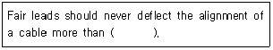
- 12°
- 8°
- 5°
- 3°
(정답률: 61%)
18. 후기 연소기를 작동하는데 있어서 Variable Area Nozzle이 필요한 가장 큰 이유는?
- 추력을 증가시키기 위하여
- 배기가스의 증가로 더 큰 면적을 인가하기 위하여
- 아주 농후한 혼합으로부터 오는 너무 찬 냉각을 방지하기 위하여
- 제트추력을 적절한 방향으로 유도하기 위하여
(정답률: 35%)
19. 부품의 손상형태에서 깊게 긁힌형태로, 표면이 예리한 물체와 닿았을때 생긴것을 무엇이라 하는가?
- 균열(crack)
- 가우징(gouging)
- 스코어(score)
- 용착(Gall)
(정답률: 59%)
20. 성형엔진에서 각종 기어가 그 내부에 설치되어 있어 기관구동력에 의해 윤활유 펌프, 연료펌프, 진공펌프, 발전기 및 회전계용 발전기등 여러가지 장비들을 구동시키는 부분은 크랭크 케이스의 어느 부분을 말하는가?
- 출력부분(power section)
- 앞부분(front section)
- 과급기 부분(supercharger section)
- 보기부분(accessory section)
(정답률: 44%)
2과목: 항공기정비
21. 항공기용 볼트나사(BOLT THREADS)는 거의 대개가 3등급(CLASS 3)로 제작된다. 3등급(CLASS 3)의 맞춤(FIT)은?
- 루스피트(LOOSE FIT)이다.
- 후리피트(FREE FIT)이다.
- 메디움피트(MEDIUM FIT)이다.
- 크로스피트(CLOSE FIT)이다.
(정답률: 66%)
22. 크루거 플랩에 대한 설명중 잘못된 것은?
- 기구가 복잡하고 작동장치가 크다.
- 소형 항공기에는 별로 사용하지 않는다.
- 공기역학적으로 슬롯 등과 같은 효과를 갖는다.
- 앞전 플랩에 일반적으로 사용된다.
(정답률: 39%)
23. 윤활유에 요구되는 특성이 아닌 것은?
- 저온에서 최대의 유동성을 갖추어야 한다.
- 산화에 대한 저항이 적어야 한다.
- 최대 냉각능력을 갖추어야 한다.
- 온도변화에 따른 점도의 변화가 최소이어야 한다.
(정답률: 55%)
24. 항공용 기관에서 내부에 기계적 기구를 가지지 않고 디퓨우져, 밸브망, 연소실 및 분사노즐로 구성된 기관은?
- 펄스 제트기관
- 램 제트기관
- 로켓트
- 프롭팬기관
(정답률: 51%)
25. 그림과 같이 공기가 흐르는 관에서 압력 PA와 PB의 압력 차는? (단, 물의 비중량은 1000㎏/m3이며, 공기의 비중량은 무시한다.)
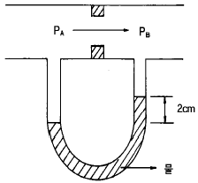
- 20㎏/m2
- 20㎏/cm2
- 2000㎏/m2
- 2000㎏/cm2
(정답률: 41%)
26. 비행기 날개골의 양ㆍ항력 특성이 좋다는 것은 어떤 의미인가?
- CLmax가 크고 CDmin이 작다.
- CLmax가 크고 CDmin이 크다.
- CLmax가 작고 CDmin이 작다.
- CLmax가 작고 CDmin이 크다.
(정답률: 76%)
27. 왕복기관 연료계통의 플로우트식 기화기의 특징중 가장 올바른 것은?
- 분출되는 연료의 기화열에 의한 온도강하에 의하여 기화기가 결빙되기 쉽다.
- 비행자세의 영향을 받지 않는다.
- 구조가 복잡하고 무게가 무겁다.
- 대형 항공기나 곡예용 항공기에 적합하다.
(정답률: 44%)
28. 왕복기관의 윤활계통에서 릴리이프 밸브의 역할로 가장 올바른 것은?
- 윤활유가 불필요하게 기관내부로 스며 들어가는 것을 방지한다.
- 기관내부로 들어가는 윤활유의 압력이 높을 때 윤활유를 펌프입구로 되돌려준다.
- 윤활유 여과기가 막혔을 때 윤활유를 여과기를 거치지 않고 직접 기관의 내부로 공급한다.
- 윤활유 온도가 높을 때 윤활유를 냉각기로 보내고 낮을 때는 직접 윤활유 탱크로 가도록 한다.
(정답률: 53%)
29. 터보제트 기관의 추진효율을 가장 올바르게 표현한 것은
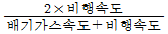
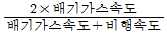
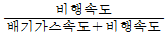
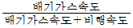
(정답률: 48%)
30. 블록 게이지 측정작업에 관한 내용으로 가장 옳은 것은?
- 검사용은 B급(1급)등급을 이용한다.
- 표준측정온도는 15°정도이다.
- 블록 게이지의 측정력은 접촉면적과는 관계 없다.
- 블록 게이지를 다룰때는 손바닥에 올려놓은 상태에서 여러번 마찰시켜서 밀착시킨다.
(정답률: 56%)
31. 양력계수는 받음각에 따라 거의 직선적으로 증가하다가 받음각이 매우 커지면 양력이 갑자기 떨어지는 받음각이 존재한다. 이 때의 받음각을 무엇이라 하는가?
- 실속각
- 항각
- 처든각
- 영각
(정답률: 81%)
32. 가스터빈 기관에서 디퓨우져(diffuser)의 설명 내용으로 가장 올바른 것은?
- 터빈의 출구와 애프터 버너 사이에 설치
- 애프터 버너 입구의 속도를 증가하기 위한 확산통로이다.
- 애프터 버너 입구의 속도와 압력을 증가하기 위한 수축통로 이다.
- 연소실과 연료 매니폴드 사이에 설치
(정답률: 20%)
33. 가스터빈 기관의 공기-오일 냉각기에서 일어나는 현상으로 가장 올바른 것은?
- 연료는 냉각되고 오일은 가열된다.
- 연료는 가열되고 오일은 냉각된다.
- 연료와 오일이 모두 가열된다.
- 연료와 오일이 모두 냉각된다.
(정답률: 76%)
34. Turn buckle의 나사는 일반적으로 어떻게 되어 있는가?
- 한쪽은 오른나사 한쪽은 왼나사
- 양쪽 다 왼나사
- 양쪽 다 오른나사
- 나사는 한쪽만 있으면 오른 나사이다.
(정답률: 86%)
35. ( ) 안에 알맞는 말을 순서대로 올바르게 나열한 것은?
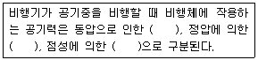
- 관성력 - 힘 - 마찰력
- 힘 - 관성력 - 마찰력
- 마찰력 - 힘 - 관성력
- 관성력 - 마찰력 - 힘
(정답률: 61%)
36. 비행기 날개에서의 압력중심에 관한 설명 내용으로 가장 올바른 것은?
- 비행기의 안전성과 날개의 구조강도상 이동이 작은 것이 좋다.
- 받음각에 관계없이 일정하다.
- 캠버 길이의 1/4 정도인 곳에 위치한다.
- 비행기가 급강하할 때 앞으로 이동한다.
(정답률: 47%)
37. 공장정비(Shop Maintenance)에서 수행되는 정비작업은?
- A 점검(check)
- Engine 교환(engine replacement)
- I S I
- Engine 오버홀
(정답률: 47%)
38. 밑줄친 부분을 의미하는 올바른 단어는?
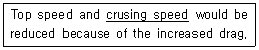
- 최고속도
- 상승속도
- 순항속도
- 경제속도
(정답률: 82%)
39. 굴곡작업에 관한 내용으로 가장 관계가 먼 것은?
- 작업표시는 유성펜을 사용한다.
- 굴곡부에 생기는 신축등 광혹한 조건을 받는곳에는 판의 그레인(Grain)방향에 일치시키는것이 좋다.
- 성형점(Mold point)은 접어 구부러진 재료의 안쪽에서 연장한 직선의 교점이다.
- 릴리프 홀(Relief Hole)의 위치는 릴리프 홀의 바깥 주위가 적어도 안쪽 굴곡 접선의 교차부분에 접해 있어야 한다.
(정답률: 41%)
40. 비행기의 동적 가로안정의 특성과 관계가 없는 것은?
- 방향 불안정
- 세로 불안정
- 나선 불안정
- 터치롤
(정답률: 67%)
3과목: 항공기관
41. 항공기에 연료를 보급할 때 항공기와 연료보급 차량과의 거리는 최소한 얼마 이상을 띄워야 하는가?
- 1m
- 2m
- 3m
- 5m
(정답률: 60%)
42. 압축비가 7인 오토사이클의 열효율은 몇 %인가? (단, 가스의 비열비는 1.2)
- 68.8
- 54.2
- 46.8
- 32.2
(정답률: 26%)
43. 초음속기에 사용되는 배기덕트는?
- 수축형
- 확산형
- 대류형
- 수축-확산형
(정답률: 59%)
44. 밸브 개폐시기에 사용되는 용어 약자중 상사점전을 표시한 것은?
- BTC
- BDC
- ATC
- ADC
(정답률: 75%)
45. NACA 5자 계열의 날개골을 표시한 다음의 [예]에서 밑줄 친 '20'이 의미하는 것은?
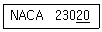
- 최대 두께가 시위의 20%이다.
- 최대 캠버의 크기가 시위의 20%이다.
- 최대 캠버의 위치가 시위의 20%이다.
- 평균 캠버선의 뒤쪽 20%가 직선이다.
(정답률: 69%)
46. 활공기가 고도 1000m 상공에서 양항비 20 인 상태로 활공한다면 도달할 수 있는 수평활공거리는 몇 m 인가?
- 50
- 1000
- 10000
- 20000
(정답률: 77%)
47. 가스터빈 시동중 시동이 시작된 후 기관의 회전수가 완속 회전수까지 증가하지 않고 이보다 낮은 회전수에 머물러 있는 현상은?
- 과열시동
- 완속시동
- 결핍시동
- 시동불능
(정답률: 77%)
48. 역화(Back Fire)가 잘 일어날 수 있는 경우는?
- 과농후 혼합기
- 과도한 실린더 압력
- 과도한 실린더 온도
- 과희박 혼합기
(정답률: 55%)
49. 피스톤 핀의 종류에 속하지 않는 것은?
- 고정식
- 반부동식
- 평형식
- 전부동식
(정답률: 59%)
50. 작동 부분의 윤활, 브레이크, 타이어 등의 점검은 무슨 점검에 속하는가?
- 비행전 점검
- A점검
- B점검
- C점검
(정답률: 49%)
51. 고압가스취급 안전사항중 산소취급시의 안전사항이 아닌것은?(오류 신고가 접수된 문제입니다. 반드시 정답과 해설을 확인하시기 바랍니다.)
- 소화기를 비치한다.
- 옷에 묻었을 때 즉시 해독하고 제거해야 한다.
- 환기가 잘되도록 한다.
- 오일이나 그리이스와 혼합하면 폭발위험이 있으니 주의해야 한다.
(정답률: 71%)
52. 시위 2m인 날개표면을 동점성계수 0.2cm2/sec인 공기가 50m/sec의 속도로 흘러간다면 이 날개의 레이놀즈수는?
- 5 × 104
- 5 × 1⑤
- 5 × 106
- 5 × 107
(정답률: 41%)
53. 그림과 같은 터빈 깃의 냉각방법은?
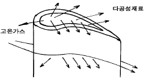
- 침출냉각
- 충돌냉각
- 공기막냉각
- 대류냉각
(정답률: 59%)
54. 헬리콥터에서 조종사의 조종을 쉽게 하기위한 것과 가장 거리가 먼 것은?
- 플래핑 힌지
- 리드-래그 힌지
- 버핏팅(buffeting)
- 주기적 피치(cyclic pitch)
(정답률: 81%)
55. 배전기 회전자의 리타아드 핑거(retard finger)의 역할로 가장 올바른 것은?
- 자동점화(auto ignition)를 방지한다.
- 마그네토의 손상을 방지한다.
- 킥백(kick back) 현상을 방지한다.
- 축전지 손상을 방지한다.
(정답률: 52%)
56. 필요마력이 최소인 상태로 비행할 때의 속도를 무엇이라 하는가?
- 경제속도
- 순항속도
- 종극속도
- 한계속도
(정답률: 52%)
57. 가스터빈 기관의 터빈깃에 직각으로 머리카락 모양의 균열형태로 나타날 때의 결함원인으로서 가장 올바른 것은?
- 과열
- 열응력
- 열팽창
- 고열
(정답률: 67%)
58. 카운터 성크 리벳(counter sunk rivet)이 주로 사용되는 곳은?
- 내부 구조물에 많이 사용되며 두꺼운 판을 접합하는 데 사용된다.
- 항공기 내부구조의 결합에 사용된다.
- 항공기 외피용으로 사용된다.
- 아무데나 사용된다.
(정답률: 58%)
59. 다이첵크(Dye Penetrant)검사의 절차에서 사용되는 용어가 아닌 것은?
- 사전처리 세척
- 침투처리
- 유화처리
- 현미경투시
(정답률: 70%)
60. 가스터빈 기관의 연소실 형식중 애뉼러형 연소실의 특징으로서 틀린 것은?
- 연소실 구조가 복잡하다.
- 연소실의 길이가 짧다.
- 연소실 전면 면적이 좁다.
- 연소효율이 좋다.
(정답률: 43%)